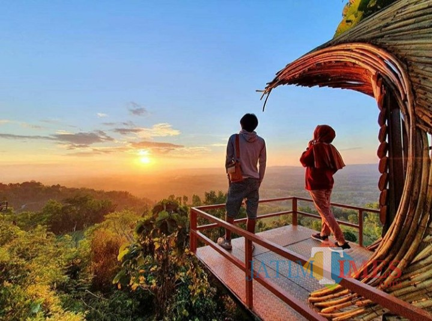
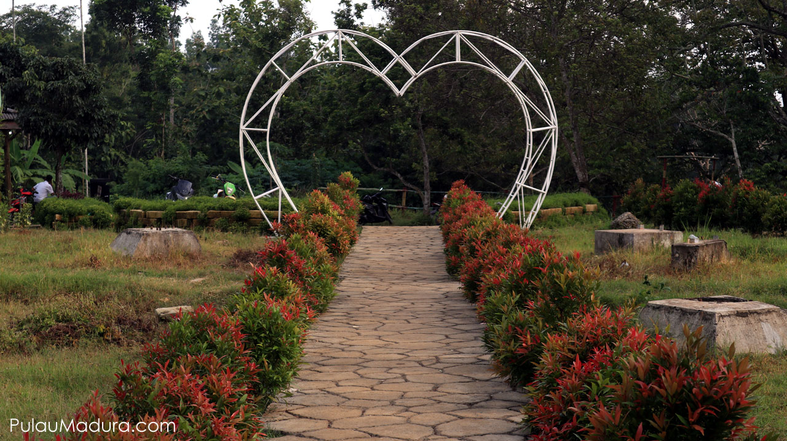
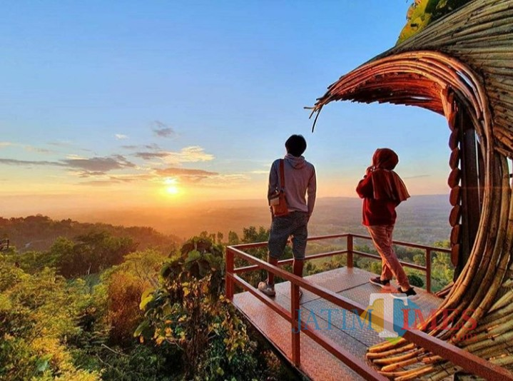
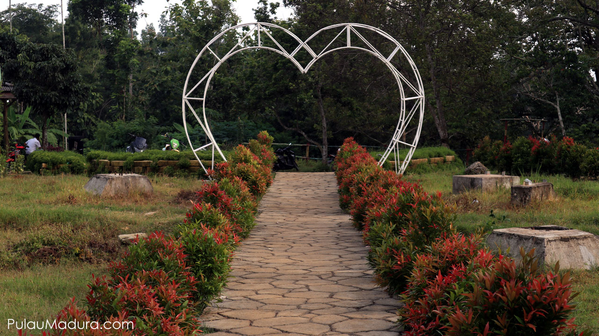

Puncak Ratu Pamekasan menawarkan sensasi liburan seru dengan konsep wisata alam kekinian nan instagrammable dengan beberapa spot foto kece di dalamnya. Begitu memasuki kawasan wisata ini kamu langsung disuguhi dengan pesona alam
perbukitan yang asri dan menyejukkan mata. Hawa sejuk yang berpadu dengan lingkungan asri di tempat ini sangat cocok untuk sekedar me-refresh pikiran dari segala kepenatan. Di lokasi wisata ini kamu bisa dengan leluasa menikmati
keindahan alam di khas perbukitan dengan view pepohonan yang bikin adem. Selain menikmati kesejukan alamnya, kamu juga bisa mengeksplor beberapa spot foto yang tersedia di tempat ini. Diantaranya adalah spot berupa gardu pandang yang
akan membuat foto selfiemu semakin keren dengan pemandangan nan eksotis di sekitarnya. Ada juga gerbang berbentuk hati dengan view pepohonan sebagai background-nya sehingga kamu bisa memilih pose terbaikmu saat berfoto selfie di
tempat ini. Yang lebih menarik, di tempat ini juga terdapat dekorasi menyerupai kurungan dengan hiasan kelambu yang bisa kamu gunakan untuk bersantai atau sekedar nongkrong dan ngobrol bersama keluarga. Kamu juga bisa memanfaatkan
dekorasi ini untuk berfoto selfie dengan konsep yang lebih unik. Bukan hanya pemandangan dan kesejukannya saja yang akan memanjakanmu dalam suasana alami, momen sunset di tempat ini juga sangat menarik untuk dinantikan. Jadi pastikan
kamu tidak melewati momen tersebut dan mengabadikannya dalam bidikan kamera. Sembari menunggu momen sunset nan eskotis kamu bisa menikmati secangkir kopi susu di kedai kopi yang berada di kawasan wisata ini untuk sekedar mengusir hawa
dingin dan menghangatkan badan.
 


